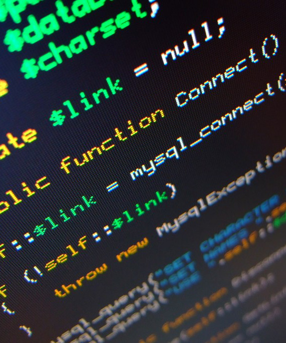
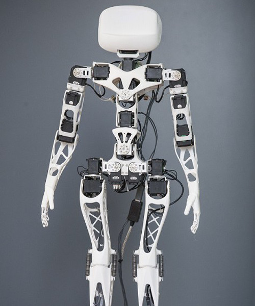

Presentation des projets




Description
Le projet tuteuré est un projet suivi, accompagné et supervisé par une autorité d’un enseignant, avec qui il sera essentiel de s’accorder lors de réunion sur les idées, la mise en forme du projet et les dates à respecter.
C’est un travail de groupe qui réunit 3 à 5 étudiants pendant toute l’année. Le projet tuteuré est une activité obligatoire dès la première le semestre 1. Pour sa réalisation, vous devrez donc choisir parmi les thèmes proposés dans la galerie.
But
Le projet tuteuré permet aux étudiants de :
- mettre en pratique les savoirs acquis au cours de la formation,
- travailler au sein d’une équipe sous contrainte de temps et de moyens,
- démontrer leurs capacités d’initiative, d’autonomie et de responsabilité
Au semestre 1, le but du projet est de réaliser un poster sur le thème choisi. Il doit être original, attractif et instructif.